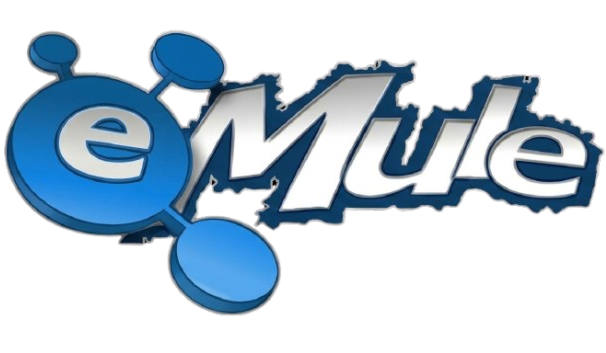
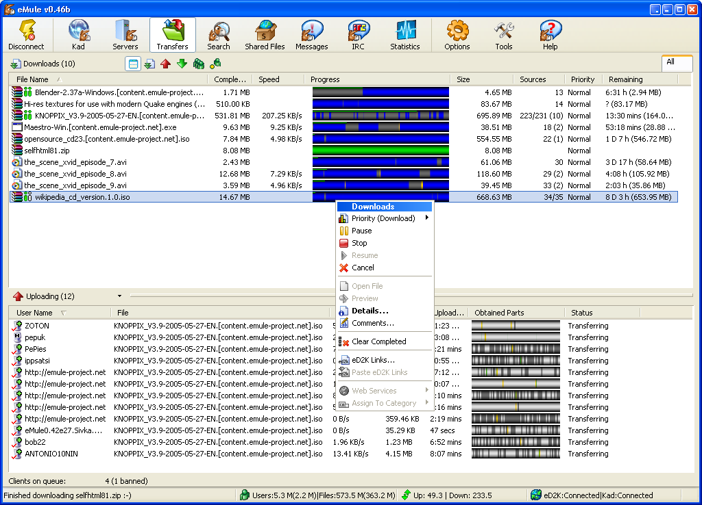
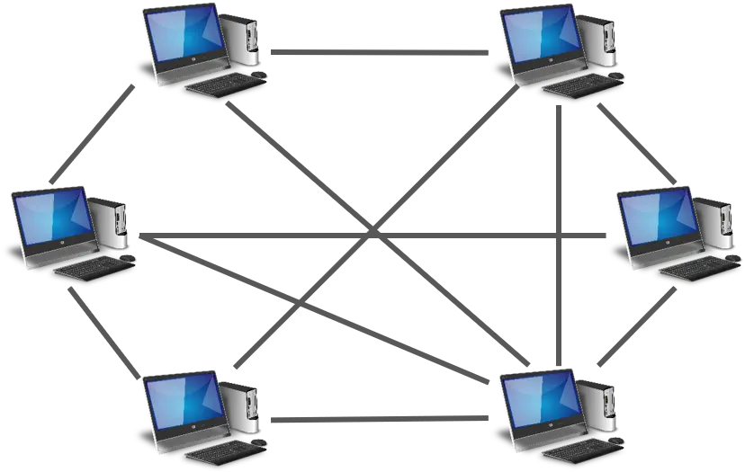

What is eMule?
eMule is a free and open-source peer-to-peer file sharing client, allowing you to connect to millions
of users to download and share files with them.
By using the ED2K and Kademlia Network it supports semi-centralized
as well as decentralized searches and operations. All of it free and without any adware or advertising.
As of today, eMule is one of the biggest, oldest and most reliable file sharing clients around the world. Thanks to its open
source policy many developers are able to contribute to the project, making the network more efficient with each release.

Features
- Completely free and selfless.
- eMule uses several networks to create one reliable network. (ED2K, Source Exchange, Kad)
- A queue and credit system helps to ensure that everyone will get the file they want by promoting those that upload back to the network
- Remote control eMule via its Web interface
- A sophisticated UI aims to keep you informed about everything while keeping it as simple as possible
- On-thy-fly compression, error handling, corruption checking, obfuscation, NAT detection and much more: eMule's matured protocol takes care of everything behind the scenes
Do you need help?
Sometimes eMule can be a bit overwhelming for new users. But worry not! Our community is here to help.
Check out our support pages which explain all the its functions and try to answer the most questions.
If you can't find an answer there, you can visit our forum and ask your questions there.
Or you use eMule's build in IRC function to look for advice from other users.
However, please don't forget that those are not paid support staff but just users like you who are willing to help in their free time.
The P2P technology
The P2P technology consists of users that act both as client and server. Essentially removing the need for a centralized point to get the desired archives from. You can choose to "seed" one or several files while or after you download them, which will share them for other users interested in dowloading them aswell. The more people seed, the faster the downloads.

The fact no centralized servers are needed offers a strong reliability, since there isn't a single point from which the service depends, making it much more difficult if not impossible for the service to be entirely shut down.